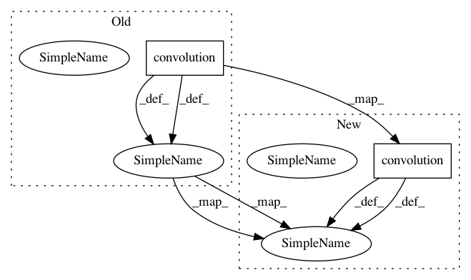

93ddba439d54cda15f22ffd9ca52318cfba01475,speech-synthesis/WaveNet/model.py,waveNet,call,#waveNet#,62
Before Change
with nn.parameter_scope("out1"):
y1 = F.relu(PF.convolution(out, self.skip_dims, kernel=(1,)))
with nn.parameter_scope("out2"):
y2 = F.softmax(PF.convolution(y1, self.output_channels, kernel=(1, )))
return y2
After Change
with nn.parameter_scope("out1"):
y1 = F.relu(PF.convolution(out, self.skip_dims, kernel=(1,)))
with nn.parameter_scope("out2"):
y2 = PF.convolution(y1, self.output_channels, kernel=(1, ))
return y2
In pattern: SUPERPATTERN
Frequency: 3
Non-data size: 2
Instances
Project Name: sony/nnabla-examples
Commit Name: 93ddba439d54cda15f22ffd9ca52318cfba01475
Time: 2019-05-14
Author: Akio.Hayakawa@sony.com
File Name: speech-synthesis/WaveNet/model.py
Class Name: waveNet
Method Name: call
Project Name: sony/nnabla-examples
Commit Name: 93ddba439d54cda15f22ffd9ca52318cfba01475
Time: 2019-05-14
Author: Akio.Hayakawa@sony.com
File Name: speech-synthesis/WaveNet/model.py
Class Name: waveNet
Method Name: residual_block